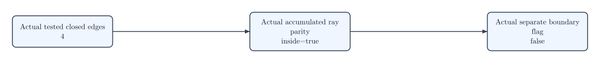
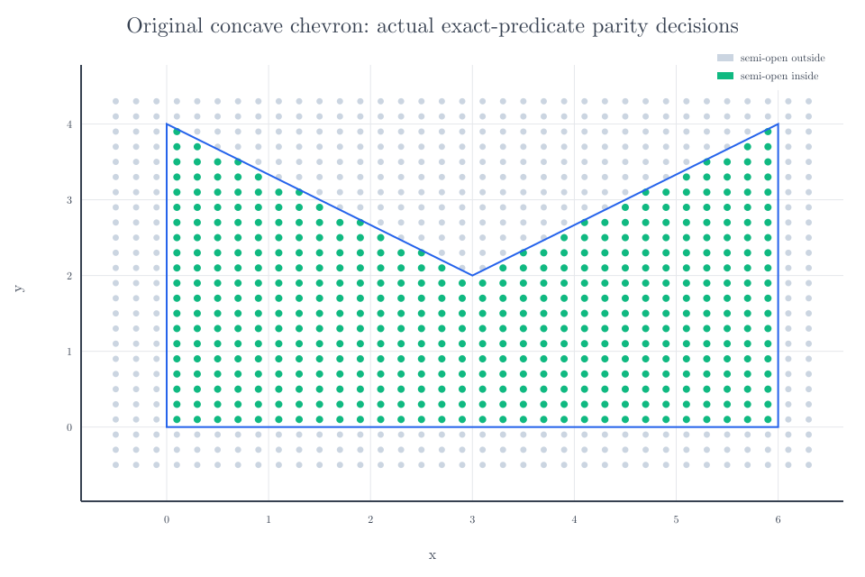
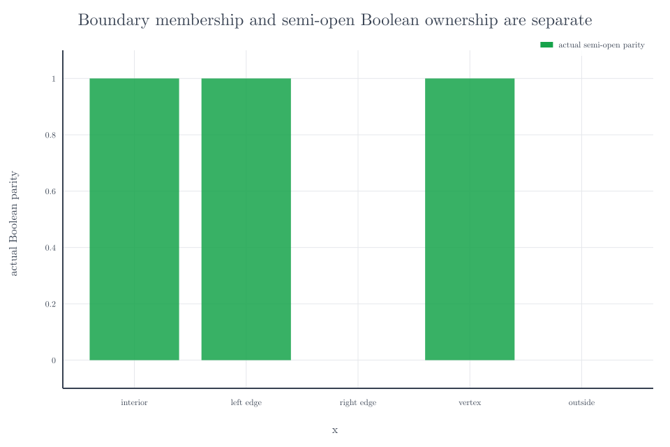
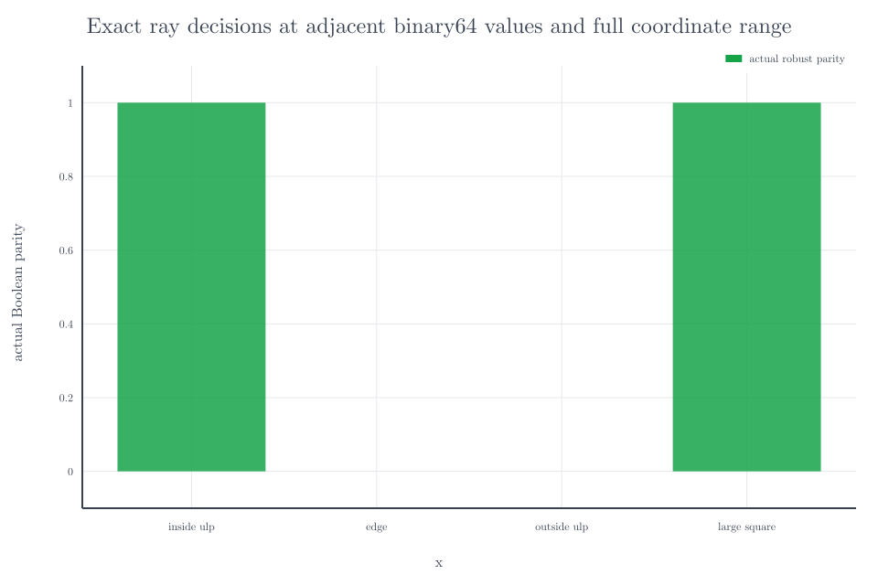

Point in polygon: actual robust ray crossings and boundary ownership
Abstract
Study the actual native producer from a tiny, inspectable example through the retained original experiment and explicit boundary/work controls. Complete editable C++ programs own every rendered native figure.
Mechanism and scope
The historical Boolean API implements a semi-open even-odd ray rule, whose boundary points can belong to either parity. The new explicit location separates exact boundary membership from that ownership convention. A straddling edge crosses the rightward ray according to an exact orientation sign of the stored finite binary64 coordinates, avoiding an overflowing or cancelling intersection quotient. This classifies a closed path’s even-odd fill; it does not certify polygon simplicity. The original concave chevron and double-increment query grid remain. No external dataset is needed.
A tiny actual producing history
The table reads actual producing records. The native diagram names actual captured values from that same run.
#include <dm/dm.hpp>
int main() {
std::filesystem::create_directories("build");
auto t =
dm::geometry::point_in_polygon_trace({1, 1},
{{0, 0}, {2, 0}, {2, 2}, {0, 2}});
std::print("\n| previous vertex | current vertex | actual y-straddle | exact " "orientation(current,previous,query) | boundary | toggled | parity after |\n| ---: | ---: | " "--- | ---: | --- | --- | --- |\n");
for (auto &r : t.edges)
std::print("| {} | {} | {} | {} | {} | {} | {} |\n", r.previous,
r.current, r.straddles, r.orientation, r.boundary, r.toggled,
r.inside_after);
dm::graphics::Diagram d;
d.node("n0", {0, 0},
std::format("Actual tested closed edges\n{}", t.edges.size()));
d.node("n1", {9, 0},
std::format("Actual accumulated ray parity\ninside={}", t.inside));
d.node("n2", {18, 0},
std::format("Actual separate boundary flag\n{}",
t.location == dm::geometry::PolygonLocation::Boundary));
d.edge("n0", "n1").edge("n1", "n2");
d.save_svg("build/point_in_polygon_tiny.svg");
}| previous vertex | current vertex | actual y-straddle | exact orientation(current,previous,query) | boundary | toggled | parity after |
|---|---|---|---|---|---|---|
| 3 | 0 | true | -1 | false | false | false |
| 0 | 1 | false | -1 | false | false | false |
| 1 | 2 | true | -1 | false | true | true |
| 2 | 3 | false | -1 | false | false | true |

The retained original experiment
#include <dm/dm.hpp>
int main() {
std::filesystem::create_directories("build");
const std::vector<dm::geometry::Point2D> polygon{{0, 0}, {6, 0}, {6, 4},
{3, 2}, {0, 4}};
std::print("\n| original query | native semi-open parity | exact boundary |\n| --- | --- | --- |\n");
for (auto q : std::vector<dm::geometry::Point2D>{{3, 1}, {3, 3}, {1, 2},
{5, 3.5}, {7, 2}}) {
auto t = dm::geometry::point_in_polygon_trace(q, polygon);
std::print("| ({},{}) | {} | {} |\n", q.x, q.y, t.inside,
t.location == dm::geometry::PolygonLocation::Boundary);
}
std::vector<double> ix, iy, ox, oy, px, py;
for (double y = -.5; y <= 4.5; y += .2)
for (double x = -.5; x <= 6.5; x += .2) {
const bool inside = dm::geometry::point_in_polygon({x, y}, polygon);
(inside ? ix : ox).push_back(x);
(inside ? iy : oy).push_back(y);
}
for (auto q : polygon) {
px.push_back(q.x);
py.push_back(q.y);
}
std::print("Original double-increment grid: actual inside count {}, outside count {}.\n",
ix.size(), ox.size());
auto p = dm::graphics::RPlot::create();
p.points(ox, oy, "semi-open outside", {203, 213, 225}, 3.5).points(
ix, iy, "semi-open inside", {16, 185, 129}, 4).polygon(
px, py, {37, 99, 235}, false).title("Original concave chevron: actual exact-predicate parity decisions").x_label("x").y_label("y");
p.save_svg("build/point_in_polygon_original.svg");
}| original query | native semi-open parity | exact boundary |
|---|---|---|
| (3,1) | true | false |
| (3,3) | false | false |
| (1,2) | true | false |
| (5,3.5) | false | false |
| (7,2) | false | false |
Original double-increment grid: actual inside count 450, outside count 425.

Explicit controls
#include <dm/dm.hpp>
int main() {
std::filesystem::create_directories("build");
const std::vector<dm::geometry::Point2D> polygon{{0, 0}, {2, 0}, {2, 2},
{0, 2}};
std::vector<dm::geometry::Point2D> queries{{1, 1}, {0, 1}, {2, 1}, {0, 0},
{3, 1}};
std::vector<std::string> labels{"interior", "left edge", "right edge",
"vertex", "outside"};
std::vector<double> v;
std::print("\n| case | actual semi-open parity | explicit native location |\n| --- | --- | --- |\n");
for (std::size_t i = 0; i < queries.size(); ++i) {
auto t = dm::geometry::point_in_polygon_trace(queries[i], polygon);
const auto location =
t.location == dm::geometry::PolygonLocation::Boundary ? "boundary"
: t.location == dm::geometry::PolygonLocation::Inside ? "inside"
: "outside";
v.push_back(t.inside);
std::print("| {} | {} | {} |\n", labels[i], t.inside, location);
}
auto p = dm::graphics::RPlot::barplot(v, labels, "actual semi-open parity");
p.title("Boundary membership and semi-open Boolean ownership are separate").y_label("actual Boolean parity");
p.save_svg("build/point_in_polygon_controls.svg");
}| case | actual semi-open parity | explicit native location |
|---|---|---|
| interior | true | inside |
| left edge | true | boundary |
| right edge | false | boundary |
| vertex | true | boundary |
| outside | false | outside |

Stored-coordinate and full-range controls
#include <dm/dm.hpp>
int main() {
std::filesystem::create_directories("build");
const std::vector<dm::geometry::Point2D> unit{{0, 0}, {1, 0}, {1, 1}, {0, 1}}, large{{-1e308, -1e308}, {1e308, -1e308}, {1e308, 1e308}, {-1e308, 1e308}};
std::vector<double> v;
std::vector<std::string> labels{"inside ulp", "edge", "outside ulp",
"large square"};
std::vector<dm::geometry::Point2D> q{{std::nextafter(1., 0.), .5}, {1, .5},
{std::nextafter(1., 2.), .5}, {0, 0}};
std::print("\n| case | actual parity | exact boundary |\n| --- | --- | --- |\n");
for (std::size_t i = 0; i < q.size(); ++i) {
auto t =
dm::geometry::point_in_polygon_trace(q[i], i == 3 ? large : unit);
v.push_back(t.inside);
std::print("| {} | {} | {} |\n", labels[i], t.inside,
t.location == dm::geometry::PolygonLocation::Boundary);
}
auto p = dm::graphics::RPlot::barplot(v, labels, "actual robust parity");
p.title("Exact ray decisions at adjacent binary64 values and full coordinate range").y_label("actual Boolean parity");
p.save_svg("build/point_in_polygon_work.svg");
}| case | actual parity | exact boundary |
|---|---|---|
| inside ulp | true | false |
| edge | false | true |
| outside ulp | false | false |
| large square | true | false |

API and interpretation
Every block is a complete editable C++ program. Reusable searches, walks, geometry decisions, fixture histories and algorithm work live in the canonical library. Captured records own their values and are not reconstructed by a second algorithm in the report. Explicit policies count the documented selected calls, records or scalar entries; they are not peak-byte or wall-clock budgets. Original reference curves are labelled as references, and finite returned results are not promoted into universal convergence, recovery, scaling or speed guarantees.
Exact Fraction arithmetic checks parity and boundary classification for the
actual binary64 coordinates of a 2601-query incremented grid. Separated-query
frozen comparisons preserve historical ownership; near-boundary rounding
corrections are intentional. The shared batch passes83 native regression
tests,18 directly instrumented sanitizer tests,84 compiled and executed public
examples,391/391 scoped documentation definitions, standalone and installed
header checks, a linked installed consumer and ten representative symbol hovers.
All four complete programs execute and their computed results and local figures
survive HTML and Markdown export. Build receipts:
build/mepml-conversion/batch-284-293/.